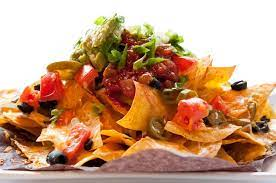

Nachos

Nachos provide the right mix of cheesy and savory to satisfy snack needs
Whether it's the addition of jalapenos or chicken
A snack like nachos has to be prepared the right way with the right spice mix
Ingredients
- 2 tablespoons chili powder
- 1 1/2 teaspoons kosher salt
- 1 teaspoon granulated garlic
- 1 teaspoon granulated onion
- 1/2 teaspoon dried oregano
- 1/4 teaspoon black pepper
- Pinch of cayenne pepper (optional)
Steps
- Preheat the oven to 350°F
- Make the taco spice blend
- Make the beef and bean topping
- Toast the chips
- Assemble and bake the nachos
- Top and serve